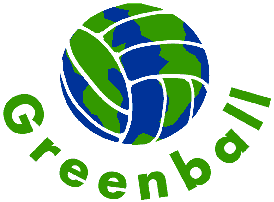
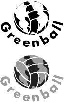

Corporate Identity Project

For a Packaging Design class, we were asked to design the packaging for a product or product line of either an existing company or a fictitious company. I chose to invent my own company, Greenball Volleyballs — a company that sells volleyballs and volleyball equipment. I defined the company's marketing strategies in the following manner:
Consumer Benefits:

High-quality product
Fair price
Environmental Benefits:
Set a precedent for a minimalist packaging trend
Minimize our own company's waste
Special Characteristics of the company:
Eco-friendly packaging
Durable ball construction
Ability to play with the ball in the store
Youthful but not juvenile image
Target Market:
Sand volleyball players
15 to 30 year-olds, mostly males
Image Statement:
At the Greenball Volleyball company, you'll be assured that you get what you want out of our sand/outdoor volleyballs because we are run and owned by sand volleyball players just like you. Our balls are durable because we know how much it sucks to pop a ball one week after you bought it. We know that you want a soft leather feel — not the hard plastic slap of some balls. And best of all, you can try out the ball right in the store before you buy it. But most importantly, we realize the need to preserve the environment we play in, so we utilize reusable and bare-minimum packaging.
Appropriate Promotions:
Advertise on demographically-similar TV programs:
The Extreme Games
AVP sand volleyball tour
MTV
Sponsor local sand volleyball tournaments
Pass out and post advertisement fliers at tournaments
Logo Ideation:

I attempted to develop a logo that would, upon sight, compel consumers to associate the company logo with: volleyball, environmental responsibility, and a fun youthful image. The logo also needed to be effective in black and white or gray for newspapers and one-color fliers.
Final Packaging Solutions:
My two solutions involved the manufacturer sending a prescribed number of balls to the retailer. The manufacturer packs the balls flat (airless) to take up less space in the box, thus fewer boxes. Included in the box are a prescribed number of "stands" which are not sold when the ball is bought. The stands are kept and reused by the retailer to minimize waste. The reasoning behind this concept is that an individually boxed volleyball package is immediately thrown away by the consumer, resulting in many pounds of unnecessary waste. The retailer is required to inflate the balls to be displayed and set them on their stands. Most sports equipment retailers have high-powered air pumps that make inflating fast and easy. Two different concepts evolved for the stand:
Concept 1:
A wire coil supports the ball, while an easily-removable sticker on the ball provides the logo, image statement, and the company's address and phone number.
Concept 2:
The ball rests on a simple recycled cardboard ring. The cardboard is about three inches high, which is enough room for the logo, image statement, and address. The color is kept in its natural recycled color to indicate the company's environmental responsibility.
Close this Window